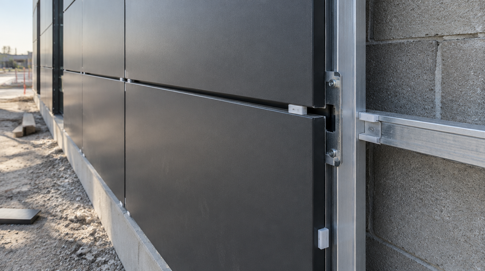
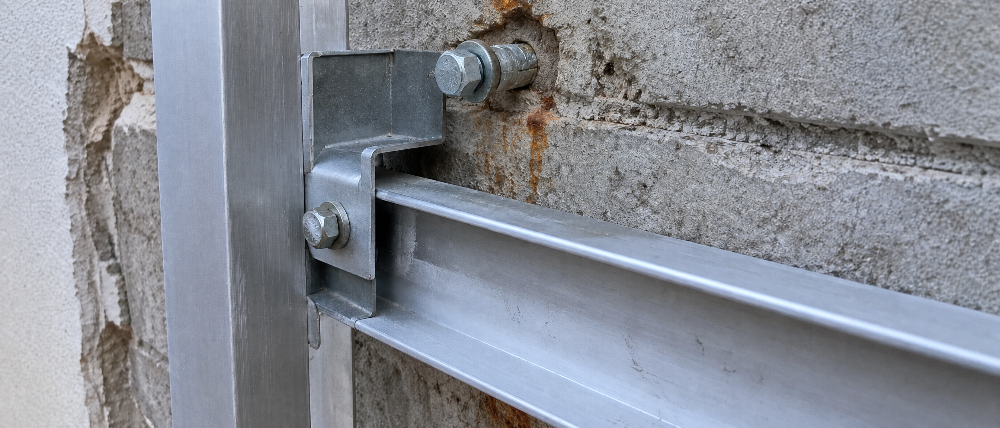

Project Walkthrough
A ground-level look at a typical commercial ACP facade project in Toronto — what we do, in what order, and why each step matters for the finished result.
The Brief
The project was a three-unit retail strip plaza in North York built in the early 1990s. The existing stucco and brick facade had reached end of life — cracked, patched, and no longer reflecting the tenants inside. The property owner wanted a clean, modern exterior that would photograph well and attract better tenants on renewal.
The scope: remove the existing stucco from the upper facade, install a new aluminum subframe directly to the concrete block structure, and clad it entirely in dark charcoal ACP with 10mm open vertical reveal joints. The storefront glazing below would remain. Soffits were included in the contract.
This is a typical project for us — a building that functions fine structurally but needs a facade that looks like the next decade, not the last one. ACP is the right material for this every time.
Material
4mm aluminum composite panel — charcoal matte PVDF finish
System
Aluminum Z-rail rainscreen subframe, 10mm open reveal joints, concealed fasteners
Substrate
Existing concrete block after stucco removal — anchored with expansion bolts
Includes
Shop drawings, fabrication, subframe supply and install, panel install, soffit cladding, perimeter sealant

Phase by Phase
Site Measure & Scope Review
Before any quote is finalized, we measure the building ourselves. GC drawings are a starting point — not a substitute for field dimensions. On this project the drawings showed the upper facade as flat, but on site we found a 40mm bow in the concrete block across the middle unit. That changes the subframe design, the panel reveal depth, and the sealant spec.
We walked the site with the GC to confirm the sequence — stucco removal by others, then our subframe, then panel install. We flagged the existing penetrations (HVAC, electrical conduit) that would need to be addressed before our subframe could go on.
What we're checking
Substrate condition, flatness tolerances, existing penetrations, anchor points, soffit depth, reveal alignment with glazing system, access and lift requirements.
Shop Drawings
We produced a full set of shop drawings showing panel layout, joint widths, subframe rail spacing and anchor locations, corner details, soffit returns, and how the system terminates at the glazing head and the roofline. Every panel gets a label that maps to a position on the drawing.
The owner reviewed and approved the panel layout — specifically the joint grid and how it aligned with the storefront mullion below. One revision: the reveal columns were shifted 150mm left to centre on the middle unit's front door. Simple change at drawing stage, expensive change after panels are cut.
Turnaround
First issue shop drawings within 5 business days of site measure. Revision and approval typically takes 3–5 days. Fabrication starts only after written approval.
Panel Fabrication
Panels were cut on our CNC router to approved dimensions, then routed and folded to create the returns on all four edges. Every panel is labelled to its shop drawing position before it leaves the table. We run a dimension check on each panel — a panel that's 3mm short on a reveal joint system shows, and it doesn't get installed.
For this project, 112 individual panels were fabricated across the main facade and soffits. Total fabrication time: 8 working days. Panels were packed and bundled by installation sequence so the crew could pull from the stack in order rather than hunting for pieces on site.
Material used
Alucobond 4mm, charcoal matte PVDF, FR core. Panel sizes ranged from 600×900mm to 1200×2400mm depending on position.
Subframe Installation
The concrete block substrate was surveyed with a level and string line before any anchors went in. The 40mm bow we found at measure was shimmed out using adjustable anchor clips — the subframe face went on dead flat even though the wall behind it wasn't.
Horizontal Z-rails were installed at 600mm centres, anchored to the block with expansion bolts at every stud location. The subframe was signed off by the GC's site super before panels were touched. This step is not optional — panels installed to a wavy subframe stay wavy.
Tolerance achieved
±2mm flatness across the full facade length. The industry standard for rainscreen systems is ±3mm per 3 metres. We hold tighter because the reveal joints make any deviation visible.
Panel Installation & Finishing
Panels were installed bottom-up in sequence, each one clipped to the Z-rails with concealed fasteners. The 10mm reveal joints were set with spacers to ensure consistent width across the full facade — inconsistent joint width on a reveal system is the most common quality issue we see on competitor jobs.
Perimeter sealant at the roofline, glazing head, and building corners was applied last. Soffit panels went in parallel on the second day. The full panel installation took three days with a two-person crew. Final walkthrough with the GC identified two panels with finish marks from transit — both replaced same day.
Punch list policy
Any panel that doesn't meet our finish standard on the walkthrough gets replaced, not buffed out. Touch-ups on PVDF coatings are visible in raking light. We don't do them.

What We Dealt With
Out-of-plane substrate
The 40mm bow in the concrete block wall was the main technical challenge. We resolved it with adjustable anchor clips and a shimming schedule that brought the subframe face to flat. The property owner never knew it was there — the facade looks like it was built that way.
Existing HVAC penetrations
Three rooftop HVAC units had supply and return penetrations through the upper facade. We custom-fabricated panel returns and stainless collars around each penetration so the cladding reads as continuous. No visible patches, no sealant blobs — just clean terminations.
Tenant access during install
Two of the three units were occupied during construction. We worked left-to-right across the building and scheduled the scissor lift access to avoid blocking any storefront for more than two hours at a time. Coordinated directly with tenants, not through the GC.
Panel layout revision at drawings
The reveal column shift requested at drawing approval stage added one day to the fabrication schedule. We absorbed it without pushing the install date — the fabrication schedule had float built in because we knew the substrate survey might add time. It did.
Result
The facade was complete and signed off within the original project schedule. The property owner leased the previously vacant end unit within 60 days of completion. That's what a good facade does.
2,400
Square feet of ACP installed
6
Weeks from first measure to sign-off
0
Callbacks or warranty claims
Have a project
that looks like this?
Let's talk about it.